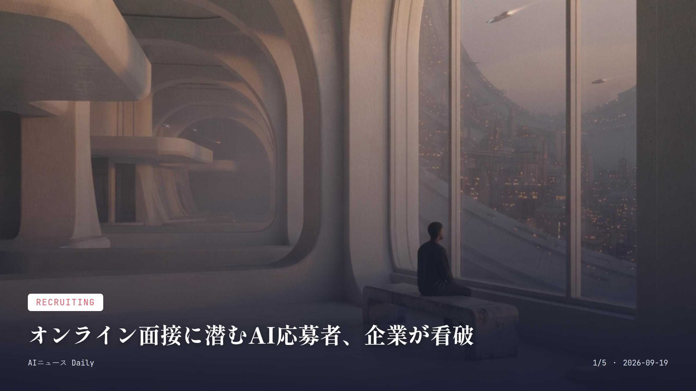
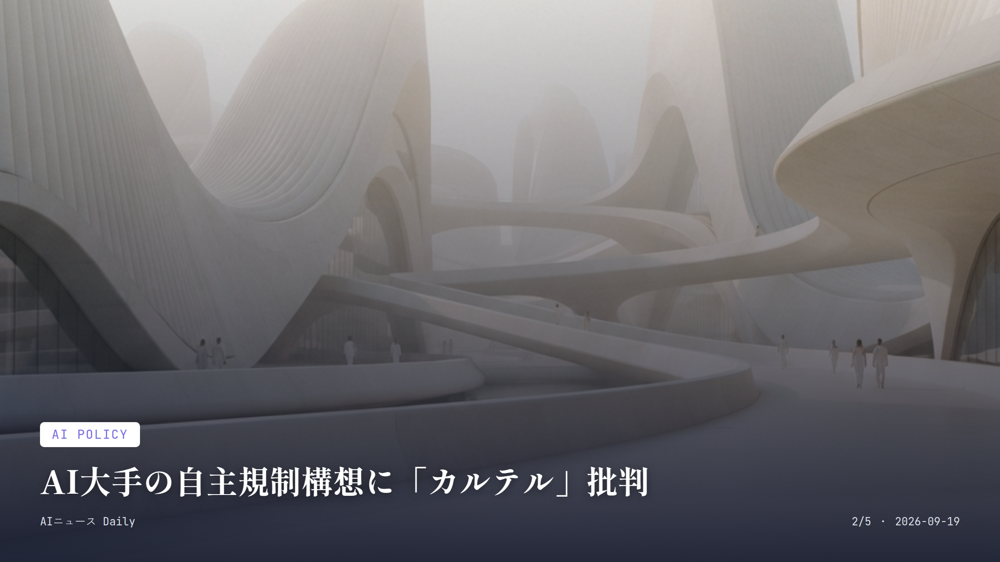
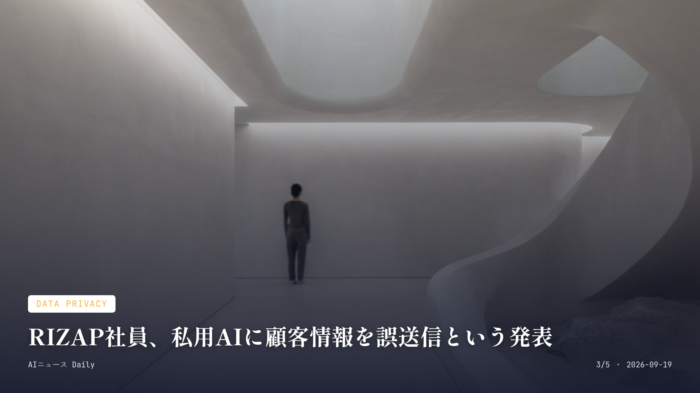
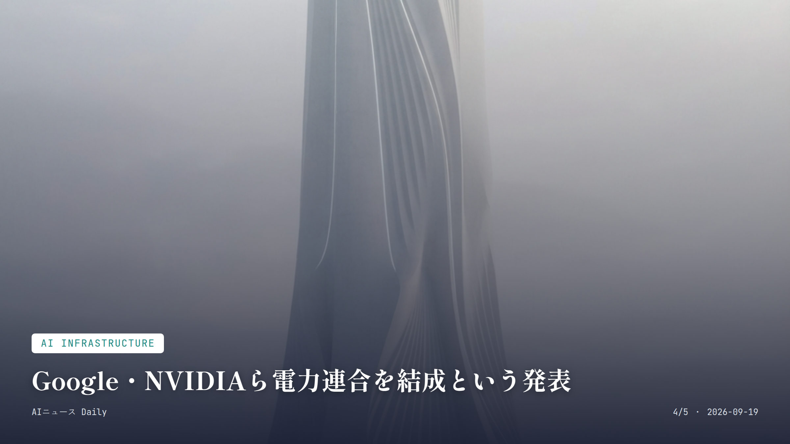
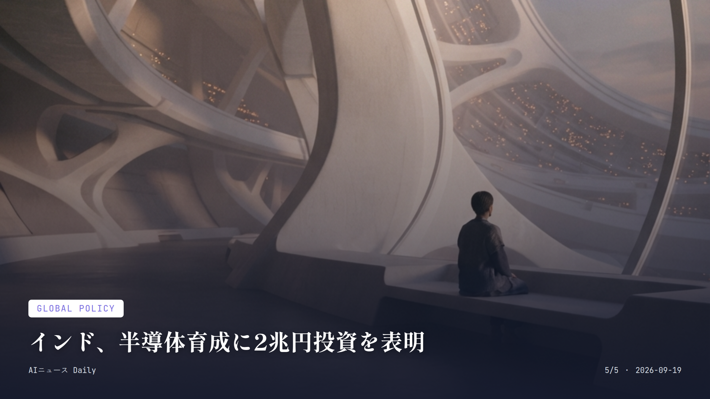

これは2026-09-19時点のアーカイブページです。最新のニュースはこちら
本サイトはアフィリエイトプログラムによる収益を得ている場合があります。
本サイトはGoogle AdSense等の広告配信サービスを利用しています。
目次

Recruiting
約2分で読める
オンライン面接に潜むAI応募者、企業が看破
声と口の動きのずれから発覚、採用面接に新たな脅威
9月10日、都内企業の中途採用オンライン面接に「AIとみられる応募者」が現れたというXの投稿が話題になった。面接官がAI使用を疑って聞くと、応募者は「使っていません」と否定。ただ声と口の動きが微妙にずれていたり、応募先企業名をきちんと読めなかったりと、なりすましを疑わせる不自然さがあったという。
実はAIを使った選考対策、もう珍しい話じゃない。Gartnerの調査によれば求職者の39%が応募プロセスで何らかのAIを使っており、6%は面接で他人になりすました経験があると答えている。同社は2028年までに、世界の応募者プロフィールの4分の1が偽物になると見込んでいる。
生成AIにその場で回答を考えさせる、声を変える、映像の顔を別人にすり替える――手口はどんどん多様化していて、企業側も本人確認を強めたり、「なぜそう考えたのか」を掘り下げる構造化面接を取り入れたりと、これまでとは違うリテラシーが求められる局面に来ている。
なぜ重要か 生成AIの精度が上がったことで、就職・転職面接の「なりすまし」はもう理屈上の話じゃなく現実に起きている。求職者にとっても企業にとっても、今すぐ使える見抜き方や対策を知っておいて損はない。

AI Policy
約1分で読める
AI大手の自主規制構想に「カルテル」批判
Cohere CEOがOpenAIなど3社の標準化構想を痛烈非難
OpenAI、Anthropic、Google傘下DeepMindの幹部たちが、金融業界の自主規制団体FINRAをモデルにしたAI業界向け標準化団体の設立を、7月からひそかに協議していたことが明らかになった。発案者はDeepMindのデミス・ハサビス氏とされている。
この動きに、Cohereの共同創業者兼CEOアイダン・ゴメス氏が噛みついた。9月13日に公開したエッセイでこの構想を「カルテル」と痛烈に批判し、「最も重要な技術のルールを、一握りの商業的に結びついた企業が書くべきではない」と主張したのだ。
米政府側にも懐疑的な声はある。財務長官はAI企業への責任保護要請を拒否しており、FTC委員長も独禁法の適用除外を求める声には「深く疑ってかかるべきだ」とコメントしている。
なぜ重要か AIの安全基準を「誰が決めるのか」は、これからの規制や競争環境、そして新興AI企業が市場に食い込めるかどうかを左右する大事な論点。巨大企業だけでルールが固まってしまえば、私たちの選択肢や価格競争の幅が狭くなりかねない。

Data Privacy
約1分で読める
RIZAP社員、私用AIに顧客情報を誤送信という発表
疾患情報など要配慮個人情報が外部生成AIに流出
RIZAPグループは9月3日、子会社RIZAPの社員が私的に使っている外部の生成AIサービスに、顧客の氏名や疾患などの個人情報・要配慮個人情報を誤ってアップロードしていたと発表し、謝罪した。誤送信されたのは特定保健指導管理システムに登録されていた対象者データの一部で、氏名や生年月日、保険証記号番号、住所、疾患情報などが含まれていたという。
業務委託元からはもっと具体的な数字も出てきている。全国土木建築国民健康保険組合は対象データが1万9996人分あったと発表し、IHIグループ健康保険組合も210人が対象だったと明らかにした。
AI運営事業者に確認したところ、個人を特定できる情報を含むファイルはモデルの学習には使われていないとの回答だったそうだが、事業者側の役職員が閲覧できてしまう状態だった可能性については、まだ確認中とのことだ。
なぜ重要か 生成AIを個人的に業務で使う「シャドーAI」による情報漏えいは、業種を問わずどこの職場でも起こりうる話。仕事で生成AIを使う際は、顧客情報や機密データの扱いに気をつけたいという教訓になる。

AI Infrastructure
約1分で読める
Google・NVIDIAら電力連合を結成という発表
データセンター電力不足解消へ、Anthropicも参加する新連合
電力網ソフトウェア企業Emerald AIは9月17日、Google、NVIDIAと手を組み、データセンター向けの電力確保を目指す新連合「AI Energy Management Alliance（AEMA）」を立ち上げたと発表した。Anthropicのほか、AES、コンステレーション、ナショナル・グリッドといった大手電力会社も名を連ねている。
AEMAが狙うのは、データセンターに不要不急の処理を一時止めてもらったり、稼働を別拠点に振り分けたりする「デマンドレスポンス」。これによって電力網に新たに接続できるデータセンター容量を、最大100ギガワット分増やすことを目指すという。
Emerald AIは直近、Energize CapitalとDCVCが主導するシリーズAで1億5000万ドルを調達したばかりで、この資金は技術の展開拡大に充てる計画だ。
なぜ重要か AI開発の急拡大でデータセンターの電力需要が逼迫する中、新しい発電所を建てずに電力網を効率よく使えれば、電気料金の急上昇を抑える一助になる。大手3社が足並みをそろえたところに、業界の本気度がにじむ。

Global Policy
約1分で読める
インド、半導体育成に2兆円投資を表明
Applied MaterialsやLam Researchが巨額投資を発表
モディ首相は9月17日、半導体産業育成策「インド半導体ミッション」の第2弾を発表し、投資規模を第1弾の80億ドルから135億ドル(約2兆円)へと大きく引き上げると表明した。設計、製造装置・材料、ファブ、先端パッケージング、研究開発、人材育成の6分野を重点分野に据えている。
米Applied Materialsは今後10年間で50億ドルを投じ、インドに研究拠点「India Vision 2035」を新設すると発表。米Lam Researchも約100億ルピーをかけて、インド初となる半導体部材（シリコンインゴット）製造工場を建てる方針を示した。
現時点で12件の半導体製造プロジェクトが承認され、うち3件はすでに商用生産に入っている。モディ首相はこの日、新たに2拠点での商用生産開始も発表した。
なぜ重要か 半導体はAIチップの供給網を支える土台。インドが巨額投資で存在感を強めれば、今後のAIハードウェアの供給や価格に長い目で影響を与える可能性がある。
Health Tech
Health Tech
約1分で読める
声を失った患者、AIメガネで意思疎通が可能に
沖縄の病院で実証、二文字入力でAIが候補を先読み
沖縄県浦添市の嶺井第一病院で、脳血管疾患や気管切開で声を出せなくなった患者向けに、AI搭載スマートグラスを使った意思疎通支援の実証が行われた。1月から4月にかけての実証には延べ25人の患者が参加し、5月29日からは正式サービスとして提供されている。
これまではスタッフがアクリル製の50音表を1文字ずつ示し、患者の反応を待つやり方で、短い訴えを聞き取るだけでも数分かかっていた。新しい方式では、メガネの視界に50音表が浮かび上がり、2文字入力するとAIが候補の言葉を先回りして提示してくれる。数分かかっていた意思伝達が、数十秒から数秒にまで縮まったという。
使う機材はNTTコノキューのスマートグラス「MiRZA」、スマートフォン、ジョイスティック型コントローラーの3点。Microsoftの技術を応用しており、声を失う前にあらかじめ登録しておけば、本人の声質を再現した合成音声で話し続けられる機能も備わっている。
なぜ重要か 声を失った患者のコミュニケーションを劇的に変えた事例で、AIが医療・福祉の現場で人の生活の質を直接高める好例だ。同様の技術は今後、ALSなど他の疾患を持つ患者にも広がっていくかもしれない。
Business AI
Business AI
約1分で読める
顧客対応AI「GeN」、契約社数が2.7倍に
カラクリが成果報酬型プランを新設、自己解決率も上昇
AIスタートアップのカラクリは、顧客対応AIエージェント「Generative Navigator(GeN)」の契約社数が直近1年で前年比171%増となり、8四半期連続の増加を記録したと発表した。導入企業の自己解決率も約1.6倍に伸びているという。
同社は新たに、AIの回答完了件数などの成果に応じて課金する「アウトカム課金モデル(成果報酬型プラン)」の提供も始めた。既存の月額固定プランとの併用もでき、企業のフェーズに合わせて選べる仕組みにしている。
情報通信・IT・SaaSに限らず、メーカー・消費財、小売・EC、官公庁・自治体まで、導入は幅広い業界に広がっているそうだ。
なぜ重要か 企業の問い合わせ対応AIが普及すれば、私たちが日常で使うコールセンターやチャットサポートの「待ち時間」や「たらい回し」が減っていくかもしれない。日本発のAIサービスが着実に実績を積み上げている点も注目したい。
先頭に戻る